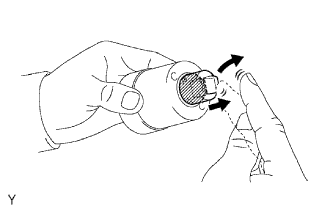
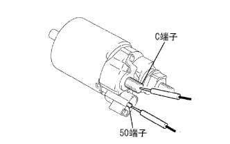
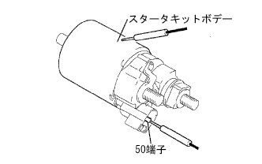
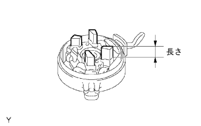
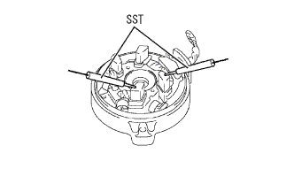
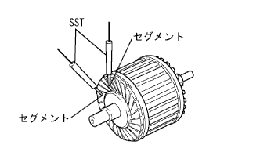
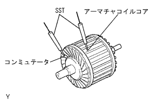
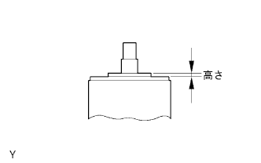
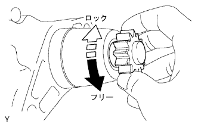

Starter Assembly (2AZ-FE) Inspection |
| 1. Inspect Repair Service Starter Kit |
Operation Check
 |
Push in the plunger and release it, and check that it quickly returns to its original position.
Continuity Inspection
 |
Using SST (Toyota electrical tester), measure the resistance between terminals 50 and C.
 |
Using SST (Toyota electrical tester), measure the resistance between terminal 50 and the repair service starter kit body.
| 2. Inspect Starter Commutator End Frame Assembly |
Brush Inspection
 |
Using vernier calipers, measure the brush length at the center.
Resistance Inspection
 |
Using SST (Toyota electrical tester), measure the resistance between the positive (+) and negative (-) brush holders.
| 3. Inspect Starter Armature Assembly |
Continuity Inspection
 |
Using SST (Toyota electrical tester), measure the resistance between the segments.
Resistance Inspection
 |
Using SST (Toyota electrical tester), measure the resistance between the commutator and armature coil core.
Height Inspection
 |
Using vernier calipers, measure the height of the armature at the position shown in the illustration.
| 4. Inspect Motor Terminal Starter Kit |
Operation Check
 |
While holding the drive shaft, check that the pinion gear locks when turned clockwise and turns smoothly when turned counterclockwise.